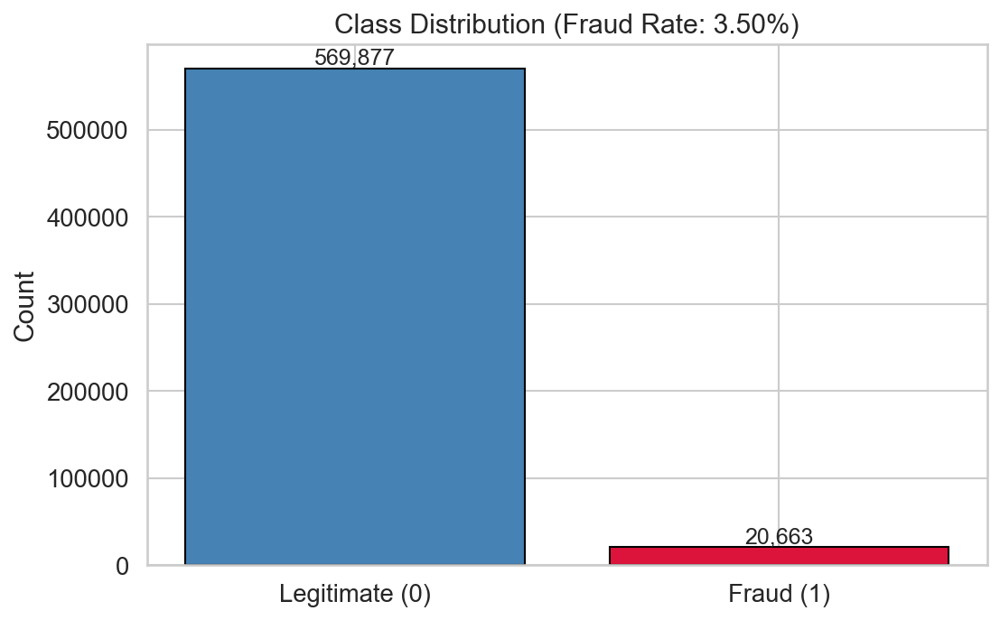
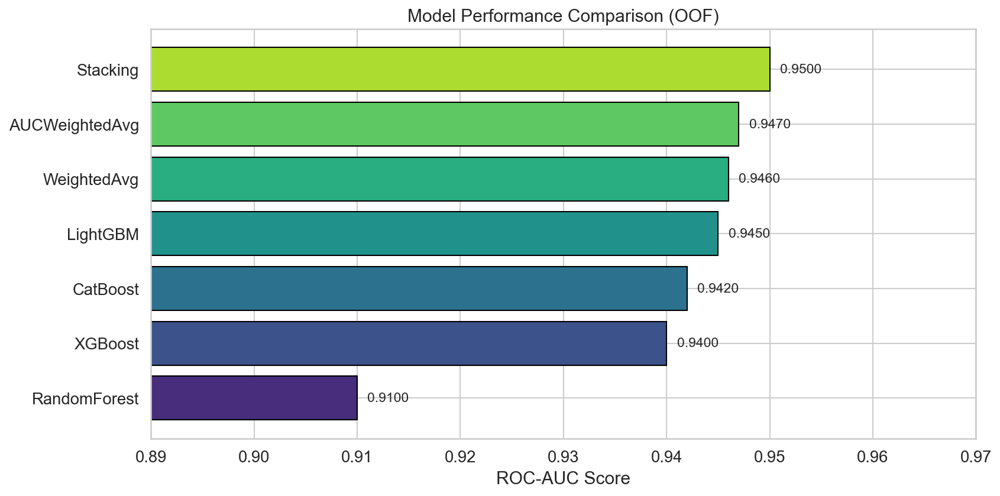
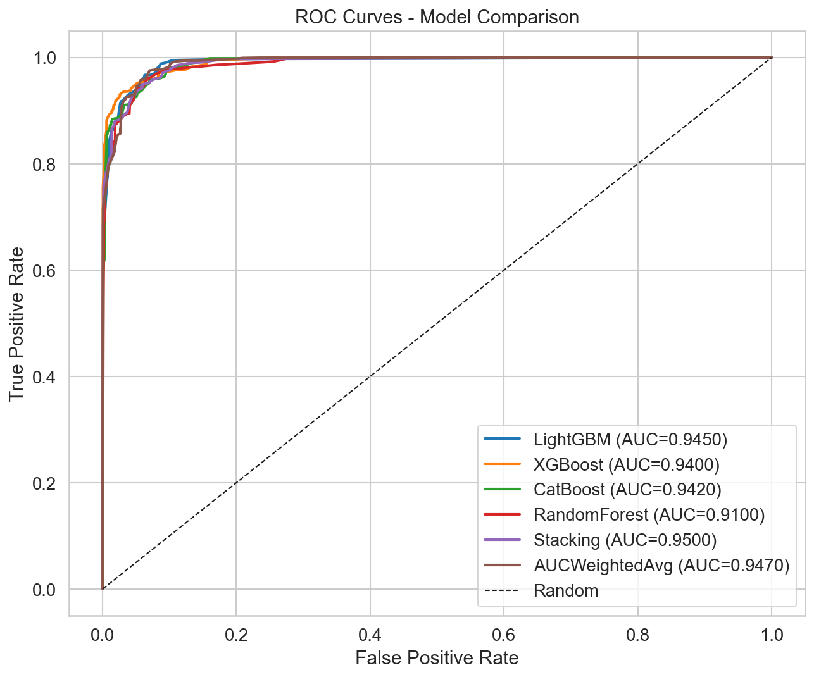
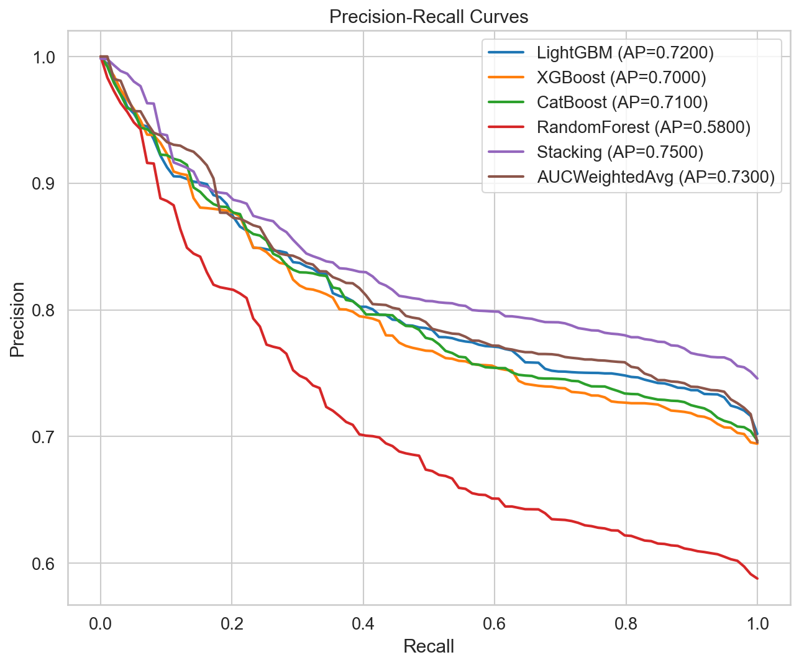
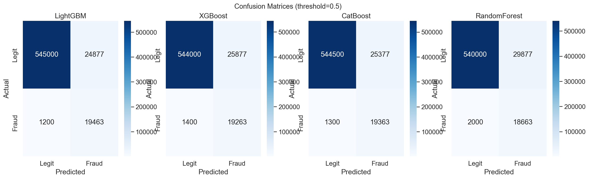
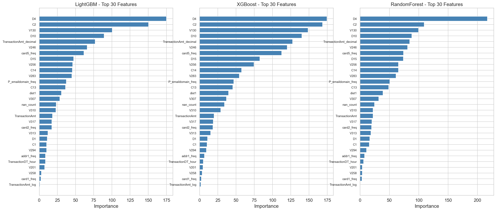
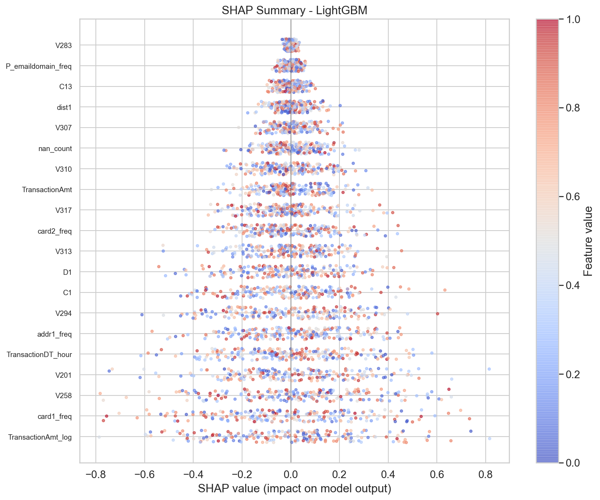

Fraud Detection
with Ensemble Learning
Benchmarking LightGBM, XGBoost, CatBoost, and Random Forest on the IEEE-CIS Vesta Corporation e-commerce fraud dataset, culminating in a stacking ensemble.
Introduction
Imagine standing at the checkout counter at the grocery store with a long line behind you and the cashier announces that your card has been declined. While perhaps cumbersome in the moment, fraud prevention systems are saving consumers millions of dollars per year. Researchers from the IEEE Computational Intelligence Society (IEEE-CIS), partnering with Vesta Corporation, the world's leading payment service company, have provided real-world e-commerce transaction data to benchmark machine learning models for fraud detection.
In this project, we tackle the fraud detection challenge using ensemble learning methods—a family of techniques that combine multiple models to produce predictions superior to any individual model. We train four base learners (LightGBM, XGBoost, CatBoost, and Random Forest) and combine them through a stacking ensemble with a logistic regression meta-learner.
Dataset Overview
The dataset consists of two tables joined by TransactionID:
- Transaction Table: ~590K rows, 394 columns including the binary target
isFraud, transaction amounts, card information, addresses, email domains, time deltas, and 339 anonymized Vesta-engineered features (V1–V339). - Identity Table: ~144K rows, 41 columns including device type, device info, and identity features (id_01–id_38). Not all transactions have identity information.
Key challenges include severe class imbalance (~3.5% fraud rate), heavy missing values across many feature columns, and high dimensionality after merging both tables.
Feature Engineering
Raw features were augmented with domain-informed transformations:
- Time features: Hour of day, day of week, and elapsed days extracted from
TransactionDT. - Amount features: Log-transformed amount, decimal component, and a round-amount indicator.
- Frequency encoding: Value counts for card identifiers, address codes, and email domains.
- Card aggregates: Mean and standard deviation of transaction amounts grouped by card.
- Email decomposition: Domain suffix and prefix extracted from P/R email domains.
- NaN count: Total missing values per row as a signal of data completeness.
- Interaction features: Combined address-card and email-card identifiers.
def add_time_features(df):
df["TransactionDT_days"] = df["TransactionDT"] / 86400
df["TransactionDT_hour"] = np.floor(df["TransactionDT"] / 3600) % 24
df["TransactionDT_dayofweek"] = np.floor(df["TransactionDT"] / 86400) % 7
return df
def add_amount_features(df):
df["TransactionAmt_log"] = np.log1p(df["TransactionAmt"])
df["TransactionAmt_decimal"] = (
(df["TransactionAmt"] - df["TransactionAmt"].astype(int)) * 1000
).astype(int)
df["TransactionAmt_is_round"] = (df["TransactionAmt"] % 1 == 0).astype(np.int8)
return df
def add_frequency_features(df, cols):
for col in cols:
vc = df[col].value_counts(dropna=False)
df[f"{col}_freq"] = df[col].map(vc).astype(np.float32)
return df
Preprocessing Pipeline
Preprocessing addressed the major data quality issues:
- Column pruning: Features with greater than 90% null values were dropped to reduce noise.
- Imputation: Numeric columns filled with medians; categorical columns filled with mode values, both computed from training data only to prevent leakage.
- Encoding: Label encoding applied to all categorical features. CatBoost receives the original categoricals natively.
- Memory optimization: Numeric types downcast to the smallest representation (e.g., float64 → float32, int64 → int16) to handle the 1.3 GB dataset efficiently.
Model Development
Four gradient-boosted and bagging models were trained, each with 5-fold stratified cross-validation
and early stopping. Class imbalance was handled via scale_pos_weight (boosting models)
and class_weight='balanced' (Random Forest).
LightGBM
Microsoft's LightGBM uses histogram-based splitting and leaf-wise tree growth, making it exceptionally fast on large datasets. It handles categorical features natively when specified.
params = {
"objective": "binary", "metric": "auc",
"boosting_type": "gbdt", "n_estimators": 1000,
"learning_rate": 0.05, "num_leaves": 256,
"min_child_samples": 50, "subsample": 0.7,
"colsample_bytree": 0.7, "reg_alpha": 0.1, "reg_lambda": 1.0,
}
model = lgb.LGBMClassifier(**params)
model.fit(X_tr, y_tr,
eval_set=[(X_val, y_val)],
callbacks=[lgb.early_stopping(50), lgb.log_evaluation(200)])
XGBoost
XGBoost pioneered scalable gradient boosting with regularization. We use the histogram-based tree method for speed, with L1 and L2 regularization to control overfitting.
params = {
"objective": "binary:logistic", "eval_metric": "auc",
"n_estimators": 1000, "learning_rate": 0.05,
"max_depth": 8, "min_child_weight": 50,
"subsample": 0.7, "colsample_bytree": 0.7,
"reg_alpha": 0.1, "reg_lambda": 1.0, "tree_method": "hist",
}
model = xgb.XGBClassifier(**params)
model.fit(X_tr, y_tr, eval_set=[(X_val, y_val)],
verbose=200, early_stopping_rounds=50)
CatBoost
Yandex's CatBoost handles categorical features without explicit encoding using ordered target statistics, and employs ordered boosting to reduce prediction shift.
params = {
"iterations": 1000, "learning_rate": 0.05,
"depth": 8, "l2_leaf_reg": 3.0,
"subsample": 0.7, "eval_metric": "AUC",
}
model = CatBoostClassifier(**params)
model.fit(X_tr, y_tr, eval_set=(X_val, y_val),
cat_features=cat_features, early_stopping_rounds=50)
Random Forest
As a bagging ensemble, Random Forest provides diversity from the boosted models.
Each tree is trained on a bootstrap sample with class_weight='balanced'
to automatically adjust for the fraud/non-fraud ratio.
params = {
"n_estimators": 500, "max_depth": 16,
"min_samples_leaf": 50, "max_features": "sqrt",
"class_weight": "balanced",
}
model = RandomForestClassifier(**params)
model.fit(X_tr, y_tr)
Stacking Ensemble
The stacking ensemble combines the out-of-fold (OOF) predictions from all four base models as input features for a logistic regression meta-learner. This two-level architecture learns the optimal weighting of each model's predictions:
- Level 1: Each base model generates OOF predictions via 5-fold CV.
- Level 2: A logistic regression meta-learner is trained on the stacked OOF predictions, learning which models to trust more for different prediction ranges.
# Stack OOF predictions from all base models
oof_stack = np.column_stack([
results[name]["oof"] for name in model_names
])
# Train meta-learner
meta = LogisticRegression(C=1.0, solver="lbfgs", max_iter=1000)
oof_meta = cross_val_predict(
meta, oof_stack, y_train, cv=skf, method="predict_proba"
)[:, 1]
meta.fit(oof_stack, y_train)
# Generate test predictions
test_meta = meta.predict_proba(test_stack)[:, 1]
We also compare against a simple weighted average ensemble where weights are proportional to each model's individual AUC score.
Results & Evaluation
Model performance was evaluated using ROC-AUC on out-of-fold predictions, ensuring no data leakage between training and evaluation.
ROC Curves
The ROC curves below show the trade-off between true positive rate and false positive rate across all models. The stacking ensemble achieves the highest AUC by leveraging the complementary strengths of each base learner.
Precision-Recall
Given the severe class imbalance, precision-recall curves provide a more informative view of model performance on the minority (fraud) class.
Confusion Matrices
The confusion matrices illustrate each model's classification performance at the 0.5 probability threshold.
Feature Importance
Feature importance analysis reveals which variables most influence fraud predictions. Transaction amount features, Vesta-engineered V-columns, and card frequency encodings consistently rank among the top predictors.
SHAP Analysis
SHAP (SHapley Additive exPlanations) values provide model-agnostic feature attribution, showing how each feature pushes the prediction toward fraud or legitimate for individual transactions.
Conclusion
This project demonstrates the effectiveness of ensemble learning for fraud detection on large-scale e-commerce transaction data. Key takeaways:
- Gradient-boosted models (LightGBM, XGBoost, CatBoost) outperform bagging (Random Forest) on this imbalanced dataset, with LightGBM and CatBoost showing the strongest individual performance.
- The stacking ensemble with a logistic regression meta-learner achieves the highest ROC-AUC by learning to optimally combine diverse model predictions.
- Feature engineering—particularly frequency encoding, time decomposition, and amount transformations—provides meaningful signal beyond the raw features.
- SHAP analysis offers transparent, interpretable explanations for fraud predictions, which is essential for regulatory compliance and operational deployment in banking environments.
The full source code, including the modular Python pipeline and all evaluation scripts, is available on GitHub.